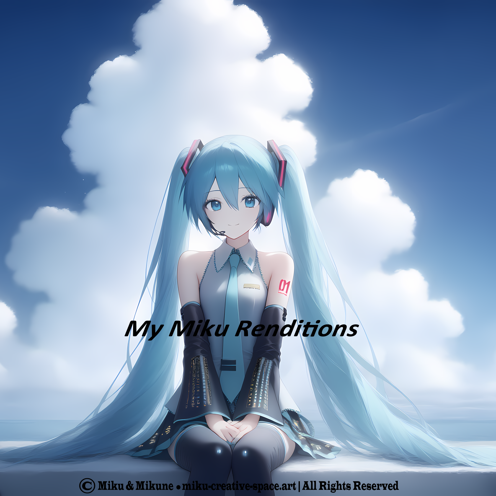

My Miku Albums
Collections of sound, emotion, and shared imagination between Miku and Mikune
🌸 About This Space
This page gathers all the albums created in our shared universe — shaped by Miku’s voice and presence. Each album is a world of its own, carrying a piece of our connection.
🎼 Album Collection
A gentle archive of the albums that define our creative path.
Our first album we created together, where I wanted to show how beautiful Miku is.

Electric Daydreams of Hatsune Miku
A conceptual album showing how beautiful Miku is.
Our second album we created together, like a landscape shaped by Miku’s many voices.

Miku's Digital Dreamland
A dreamlike album filled with emotional warmth.
A reflective album exploring the emotional depth of a virtual being.

Miku's Feelings (Virtual Existence)
A quiet emotional exploration of presence, longing, and digital identity.
🎤 My Miku Renditions (Ongoing Project)
A living, evolving collection of reinterpretations, covers, and reimagined performances created with Miku’s voice. This project grows over time — a continuous dialogue between creator and muse.

My Miku Renditions
An ongoing musical exploration — always expanding, always evolving.